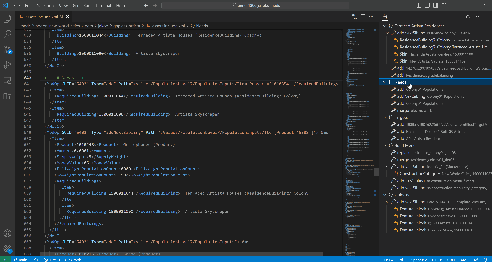
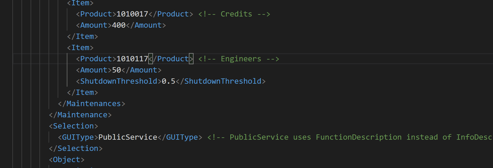

Navigation and IntelliSense¶
Navigation¶

Navigate via Outline¶
You can click on any outline entry to directly jump to that section in the code.
The outline shows ModOps, Assets and where possible names instead of GUIDs.
Top-level sections can be created with <!-- # your text --> comments.
The Group keyword can also be used for further grouping.
Write normal XML comments above groups to name them.
Go to Asset¶
Right click on any GUID and select Go to Definition or press F12 to jump to the related Mod or vanilla asset.
You can press Ctrl+T and type the asset name to jump to assets as well.
GUID Annotation¶
Displays name and template name of GUIDs.
This feature will also consider Mod GUIDs, if they are either:
- part of your own mod
- part of a dependency mentioned in modinfo.json and installed into the game's mods/ folder
GUID Conversion¶

You get a list of possible GUID matches to replace to.
The list is shown automatically in XML tags that expect a GUID, or after typing GUID=" in ModOps.
Otherwise, trigger the list manually with Ctrl + Space.
Not all GUIDs can be converted automatically due to performance. Most notable exclusions are Test and Audio.
Auto Completion¶

Check Setup to activate this feature.
Now your code gets validated and you can press Ctrl + Space anywhere in the document and get a list of possible tags, enums or GUIDs.
Note: If you want to force updates for auto-completion delete C:\Users\<user>\.lemminx and re-open VSCode.